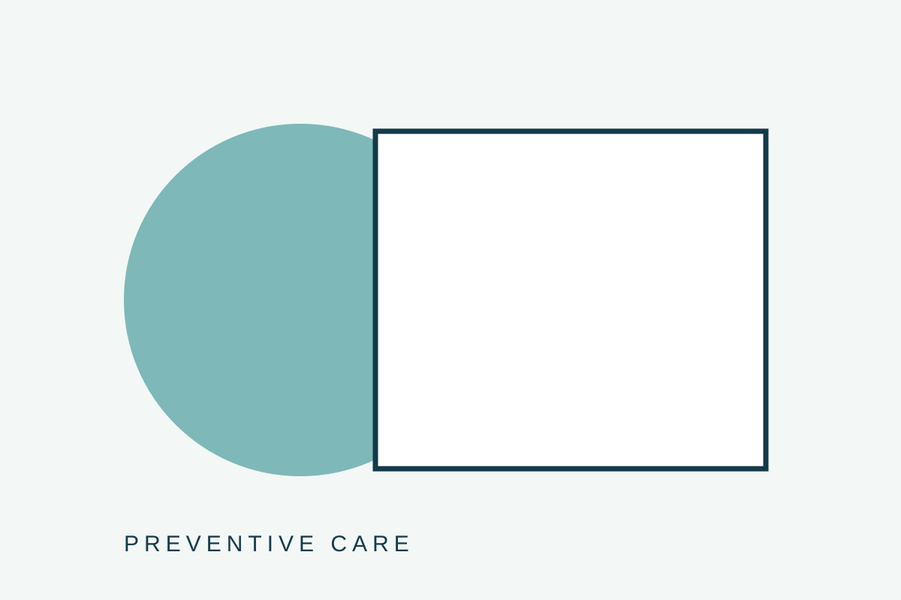
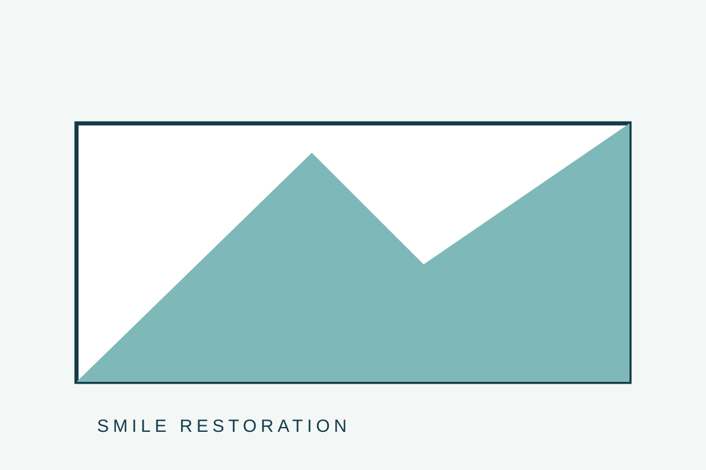

Selection 01
Preventive Care
ตรวจสุขภาพช่องปากและวางแผนการดูแลเชิงป้องกัน
รายการที่คัดสรรด้วยมาตรฐานและรายละเอียดซึ่งสะท้อนแนวคิดของแบรนด์

ตรวจสุขภาพช่องปากและวางแผนการดูแลเชิงป้องกัน

ฟื้นฟูรอยยิ้มด้วยแผนการรักษาที่เหมาะกับแต่ละบุคคล